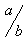

Kann man alle Konstruktionen von Formel im Auswahlfenster finden?
Es gibt ein paar Konstruktionen ohne Eintrag im Auswahlfenster.
zusätzliche beidseitige Operatoren:
a oplus b |
|
a ominus b |
|
a otimes b |
|
a odot b |
|
a odivide b |
|
a wideslash b |
 |
a widebslash b |
Außerdem, wenn %symbol ein benutzerdefiniertes Symbol ist, können Sie es sowohl rechtsseitig als auch beidseitig wie folgt verwenden:
- uoper %symbol a verwendet %symbol als ein einseitiger Operator.
- a boper %symbol b verwendet %symbol als beidseitiger Operator.
zusätzliche Relationszeichen:
a << b |
|
a >> b |
|
a def b |
|
a transl b |
|
a transr b |
zusätzliche Operatoren:
liminf f |
lim inf f |
limsub f |
lim sub f |
Zusätzlich, wenn %symbol ein benutzerdefiniertes Symbol ist, können Sie es auf folgende Weise als Operator verwenden:
- oper %symbol a verwendet %symbol als Operator.
In FAQ #006 können Sie mehr darüber erfahren.
zusätzliche Klammern:
lfloor a rfloor |
|
lceil a rceil |
Da Klammern immer eine gruppierende Funktion haben, müssen sie immer Paarweise auftreten. Für skalierte Klammern ist es notwendig, dass left und right zusammenpasst, aber der Typ der Klammer kann trotzdem frei gewählt werden. Beispiel:
- Sie können left ( a right [ eingeben um (a[ zu erhalten.
In FAQ #001 können Sie mehr zu diesem Thema erfahren.
zusätzliche Symbole:
backepsilon |
zusätzliche Funktionen:
Zu den von Formel bekannten Funktionen können Sie sich eigene Funktionen definieren, indem Sie vor die Funktion func schreiben, zum Beispiel func max. In FAQ #007 können Sie mehr dazu erfahren.
zusätzliche Kommandos zum Ändern der Schrift:
- nitalic a setzt a nicht kursiv.
- nbold a setzt a mit normaler Gewichtung.
- phantom a macht a unsichtbar.
Das Kommando color wird verwendet, um die Farbe eines Unterausdrucks zu ändern, hierzu siehe FAQ #011 für weitere Details.